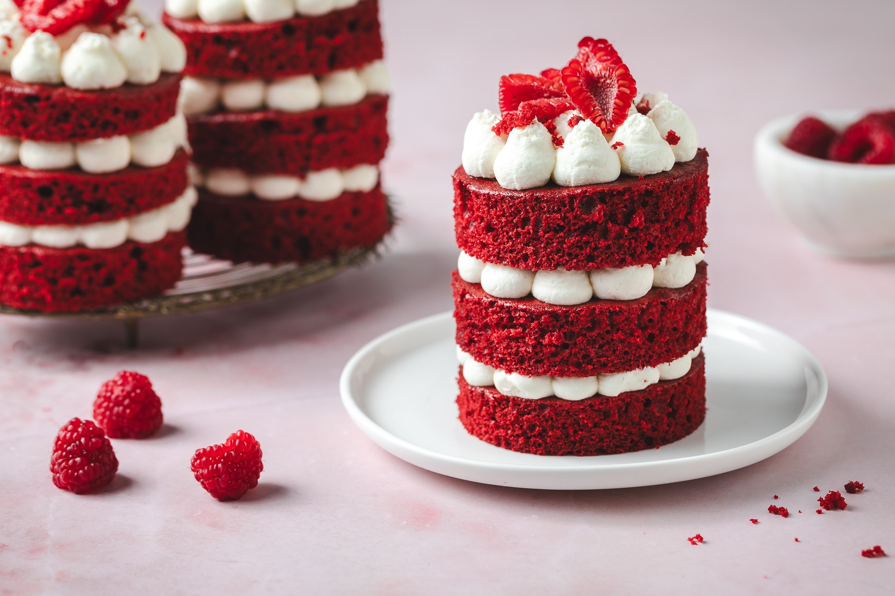

Red Velvet

Description
Red velvet cake is traditionally a red, crimson, or scarlet-colored[1] layer cake, layered with ermine icing
Ingredients
- 1 cup white sugar
- 2 eggs
- 4 tablespoons red food coloring
- 2 tablespoons cocoa
- 1 cup buttermilk
- 1 teaspoon salt
- 1 teaspoon vanilla extract
- 2 cups sifted all-purpose flour
- 1 tablespoon distilled white vinegar
- 1 ½ teaspoons baking soda
Steps
- Preheat the oven to 350 degrees F (175 degrees C). Grease two 9-inch round pans.
- Make the cake: Beat 1 cup sugar and shortening together in a large bowl with an electric mixer until light and fluffy. Add eggs one at a time, beating well after each addition. Combine red food coloring and cocoa to make a paste; add to creamed mixture.
- Mix buttermilk, salt, and 1 teaspoon vanilla together in a small bowl. Add flour, alternating with buttermilk mixture, mixing just until incorporated.
- Mix vinegar and baking soda together; gently fold into cake batter and pour into prepared pans.
- Bake in the preheated oven until a toothpick inserted into the center comes out clean, about 30 minutes. Cool on a wire rack for 5 minutes. Run a table knife around the edges to loosen. Invert carefully onto a serving plate or cooling rack. Let cool, about 30 minutes.
- Make the icing: Heat milk and flour in a saucepan over low heat, stirring constantly, until thick. Set aside to cool completely.
- Meanwhile, beat sugar, butter, and vanilla together in a large bowl with an electric mixer until light and fluffy. Add cooled flour mixture and beat until frosting is a good spreading consistency. Frost cake layers when completely cool.